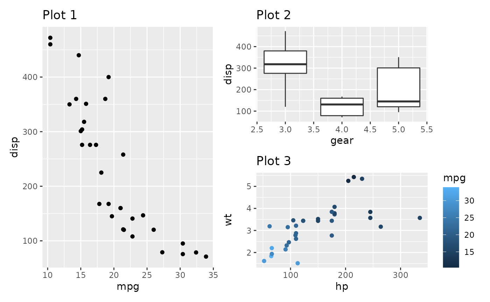
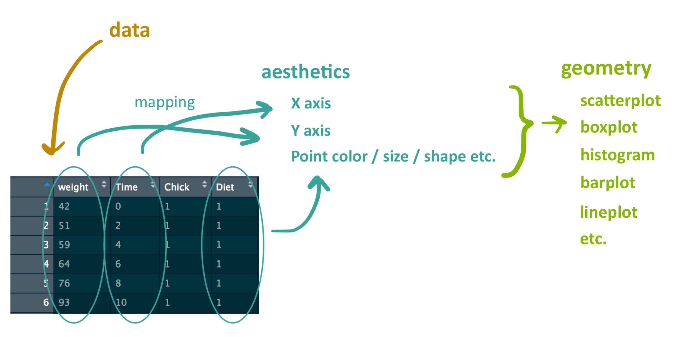
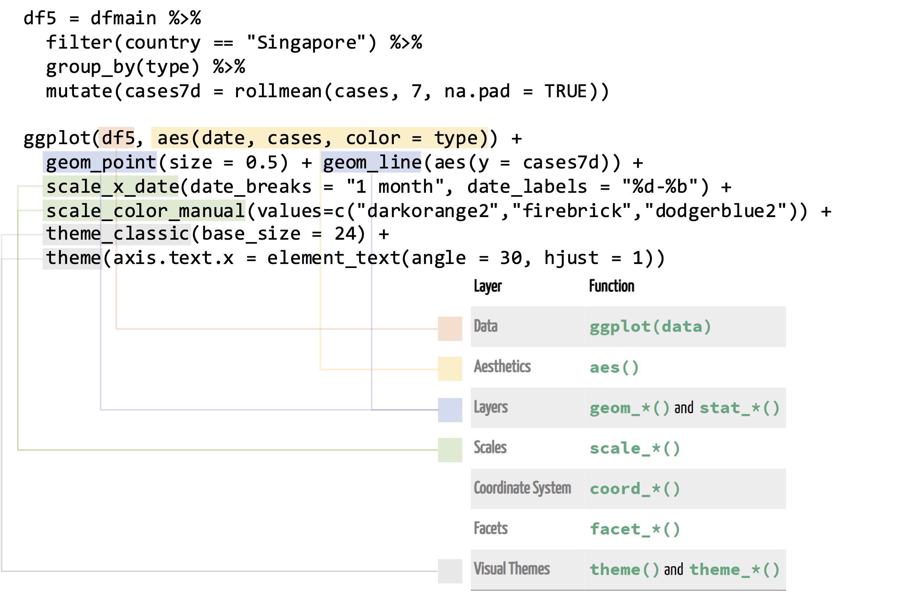

ggplot2
Fundamentals
0. Tidy data | Cleaning and formatting your data
Any data analysis pipeline starts by tidying your data, which is the process of cleaning, transforming, and reorganizing data to make it suitable for analysis and visualization.

1. Creating plots | Using ggplot2
ggplot2 is a popular package for data visualization in R. It is based on the “grammar of graphics” framework, which emphasizes the modular construction of a plot using different layers and components (ggplot2 online documentation here).
The basic syntax of ggplot2 involves three main components:
- the data,
- the aesthetics (
aes()),
- and the geometric objects (
geom()).

2. Combining plots | Using patchwork
patchwork is an R package that provides a simple way to combine multiple plots created with ggplot2 into a single panel or figure. It allows users to create complex and customized layouts of multiple plots, arranged in rows or columns, and adding labels or titles to the panel (patchwork online documentation here).
- The plots are combined and their layout is defined using the following symbols:
+(combine the plots in a square grid shape, e.g. 2x2, or 3x3);
|(place plots next to each other into equal sized grid portions);
/(place plots on top of each other).
()(group the plots into a single portion of the grid).
- Example: plot1 | (plot2 / plot3)

3. Principles of Effective Data Visualization & Common Mistakes to Avoid
Three key principles of effective data visualization are:
- Clarity | A good data visualization should be easy to understand, with clear labels, axes, and legends that explain what the data represents.
- Simplicity | Visualizations should be simple, avoiding unnecessary clutter or visual noise that can distract from the main message. Remember: “Less is more.”
- Honesty | Data visualizations should accurately represent the data being presented, avoiding misleading or deceptive representations that can distort or misrepresent the data.
In addition to these key principles, it’s important to be aware of some common mistakes to avoid when creating data visualizations:
- Distorting the data | Visualizations should accurately represent the data being presented, without distorting or misrepresenting the underlying information.
- Using inappropriate visual encoding | Choosing the wrong type of chart or visual encoding can lead to confusion or misinterpretation of the data.
- Failing to consider the audience | It’s important to consider who your audience is and what information they need to understand the data being presented.
To learn more about data visualization and ggplot2, here are some additional resources:
Illustrations from the web
- https://www.rforecology.com/post/a-simple-introduction-to-ggplot2/
- https://rfortherestofus.github.io/fundamentals/slides/data-visualization-slides.html#4
- https://ouyanglab.com/covid19dataviz/ggplot2.html
Tidy data

ggplot2 geoms

ggplot2 summary

ggplot2 grammar
